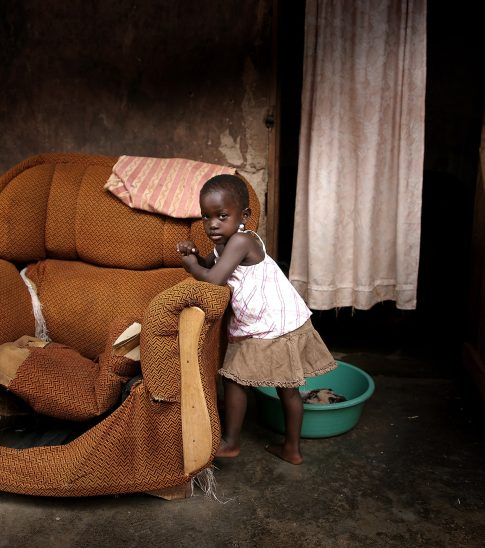
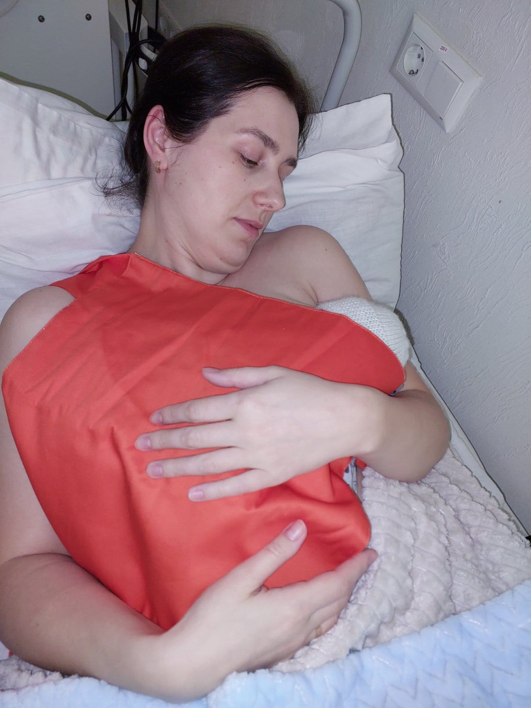
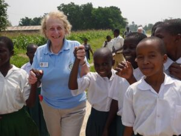
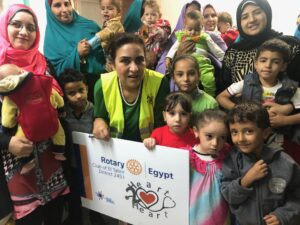

Home / Service projects

One of our aims is to channel the energy, resources and skills of health professionals – members and those who are not yet members – to help those in need.
The pandemic has widened the gulf in healthcare between high- and low-income countries. There is a desperate need for professionals to come together and channel their skills in a sustainable manner to improve health care. Below are some of our service programmes.

Kangaroo Mother Care (KMC) is an evidence-based method of promoting the health and well-being of infants born preterm through skin-to-skin contact.
We have supplied 10,000 KMC carriers to neonatal units in Ukraine.
The feedback from mothers and specialists in Ukraine has been overwhelmingly positive.
The feedback from mothers and specialists in Ukraine has been positive. We seek support to continue providing these devices to Ukraine and to introduce KMC in other conflict areas. The supply of adaptable and safe KMC carriers, along with appropriate instructions and monitoring, is a low-cost and effective method for improving the survival of vulnerable infants.
Since 2009 we have supported a community in a remote island in Lake Victoria. About 10 teams of volunteers have travelled to the island and by sharing the lives and aspirations of this community helped them on their journey to improve their lives.
A holistic and collaborative way to improve the lives of people (more..)

Many children with life-threatening conditions are in the queue facing dire consequences. At Heart2Heart we treat Egyptian children with heart Congenital Diseases with Catheter Procedures 100% Free. These children need your support. Help us save them today.
Heart2Heart - children with congenital heart defects (more...)

Partnering with our organization allows you to make real changes.
Broaden your reach and impact today.